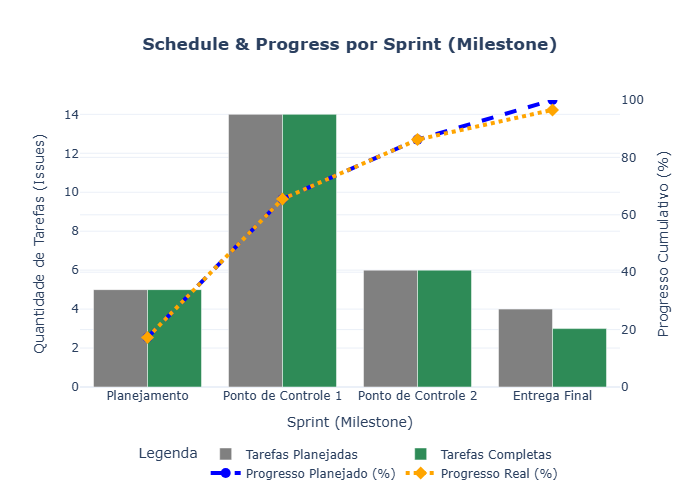
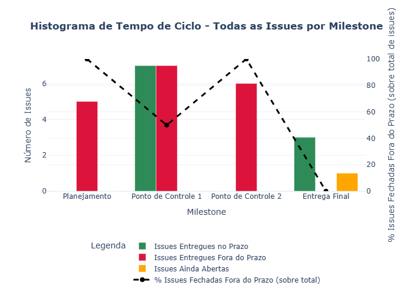
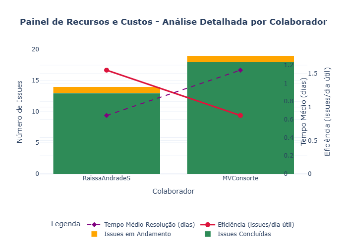

Avaliação - Etapa 4
Conforme definido no capítulo 5.4 da norma ISO/IEC 15939:2001 [1, p.17], esta etapa tem como objetivo revisar, validar e aprimorar o processo de medição e os produtos informacionais gerados ao longo dos ciclos. A avaliação permite identificar pontos fortes, limitações e oportunidades de melhoria para garantir que a medição continue relevante, eficaz e confiável.
Retorno dos gráficos
Abaixo tem os gráficos com as últimas atualizações, entretanto, caso queira de outros momentos, pode-se acessar em: Histórico.
Calendário e Progresso

Desempenho de Processo

Recursos e Custos

1. Avaliação dos Produtos Informacionais
Avalie os principais produtos gerados (planilhas, .csv, gráficos, relatórios), levando em conta os seguintes critérios. Para cada item, registre sua análise e possíveis ajustes:
| Critério | Descrição | Avaliação |
|---|---|---|
| Clareza interpretativa | Os resultados são compreensíveis pelo público-alvo | Sim |
| Conformidade com a necessidade | Os produtos atendem às necessidades informacionais definidas | Sim |
| Aderência aos dados reais | Os dados utilizados refletem fielmente os eventos ocorridos no projeto | Sim |
| Capacidade de análise comparativa | É possível comparar entre ciclos e identificar tendências | Não (Apenas foi rodado um ciclo) |
| Facilidade de disseminação | Os produtos são acessíveis e adequadamente publicados | Sim |
| Confiança dos usuários | Os resultados são considerados confiáveis pelos envolvidos | Sim |
| Ajuste ao propósito | Os produtos respondem com precisão às perguntas gerenciais previstas | Parcialmente (Necessida de mais ciclos para refinamento e correções) |
| Satisfação das premissas do modelo | As premissas técnicas foram respeitadas (escalas, métodos, distribuição) | Parcialmente (alguns ajuste foram feitos na interpretação visual) |
2. Avaliação do Processo de Medição
Avalie a execução do processo de medição, desde a coleta até a comunicação dos resultados, com base nos critérios abaixo. Complete com observações e propostas de melhoria:
| Critério | Descrição | Avaliação |
|---|---|---|
| Confiabilidade dos procedimentos | A medição seguiu métodos definidos e verificáveis | Parcialmente (em sua maioria sim) |
| Rastreabilidade dos dados | Os dados estão devidamente vinculados aos artefatos originais | sim |
| Atualização tempestiva | A coleta e análise foram realizadas em tempo útil para decisões | Não (devido à mudança na equipe de desenvolvimento, reudindo-se para 2, essa parte acabou por ficar em débito.) |
| Eficiência | O custo e esforço da medição são proporcionais ao valor gerado | Não definido |
| Contenção de defeitos | Erros foram evitados ou tratados rapidamente | Sim |
| Satisfação dos usuários | Os Desenvolvedores estão satisfeitos com os resultados e a execução da medição | Sim |
| Conformidade com o plano | O processo seguiu o plano definido nas etapas anteriores | Parcialmente (houve alguns ajustes informais extra-plano no processo) |
| Capacidade de melhoria contínua | O processo está preparado para ajustes e evolução | Sim |
3. Observações Gerais e Lições Aprendidas
Em síntese, foi possível perceber que a evolução e manutenção contínua do processo de medição são fundamentais para aprimorar a qualidade das estimativas ao longo do projeto. Quanto maior o número de ciclos realizados, mais refinadas e ajustadas tendem a ser as métricas e interpretações.
No contexto específico deste projeto, apesar de restrições que limitaram o cronograma a um período de apenas quatro dias (devido a imprevistos), observou-se que as estimativas obtidas foram adequadas para o escopo aplicado. Houve apenas um ciclo de medição, o que restringiu a capacidade de comparação entre iterações. Ainda assim, algumas lições importantes puderam ser registradas:
- A definição de um cronograma claro, factível e validado pelas partes envolvidas é essencial para garantir fluidez na execução do processo de medição.
- A etapa inicial de estabelecimento de compromissos com a equipe — conforme previsto na ISO/IEC 15939 e reforçado pelos princípios do PSM/CID — se mostrou determinante para alinhar expectativas e responsabilidades.
- A orientação do projeto por indicadores mensuráveis possibilita maior controle e transparência na entrega de valor, contribuindo diretamente para a validação do produto pelos stakeholders e clientes.
Tais lições fortalecem a necessidade de se planejar e executar medições com maior continuidade, permitindo refinamento progressivo dos indicadores e maior maturidade gerencial.